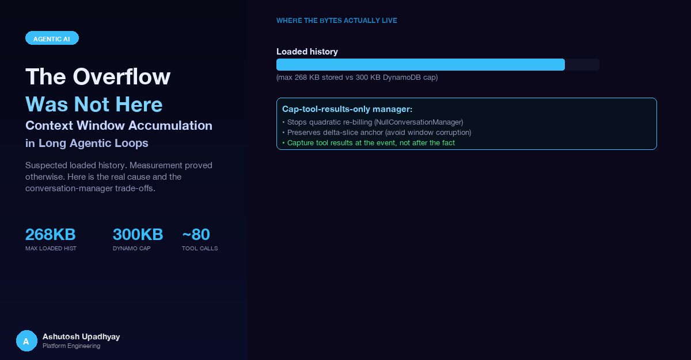

We suspected loaded session history. Measurement proved it couldn't be. Here's how we traced the real cause — and the conversation-manager trade-offs that shaped the fix.
A research query against a scientific research agent — multi-stage, pulling from a dozen data sources — returned a partial result with a note the agent hadn't seen before: context window exceeded. The agent had been running for several minutes, called tools across a wide surface of APIs and schemas, accumulated the responses, and then hit a wall somewhere in synthesis. Partial results were surfaced; the run ended early.
Our first instinct was the obvious one. This was a session-enabled agent. Users asked follow-up questions. Session history accumulated. History grows. History overflows. The natural diagnosis was that a long-running session had crossed the context limit at load time — the moment history was pulled from the store and injected into the model.
That diagnosis was wrong. The overflow wasn't in loaded history. It was happening in-flight, inside a single request, with no connection to the session store at all. Getting to the right diagnosis — instead of deploying a guard that would have done nothing — shaped every decision that followed, including a set of conversation-manager trade-offs that took several failed attempts to resolve correctly.
The natural remedy for "history grows and overflows the context window" is a byte budget at load time. Pull history from the session store, measure its serialized size, drop the oldest turns if over the limit, proceed. Simple. Defensive. Easy to reason about.
The proposal: set the budget at 750,000 bytes. The session store had an existing cap on item size — the store itself would reject writes above a certain threshold. The load-time budget would serve as an extra guard, ensuring we never loaded more than the model could handle.
Before writing the code, we asked a question that sounds obvious in retrospect: how large is history actually getting? If the existing store cap is lower than the proposed load-time budget, the budget adds no safety at all — it fires in precisely zero sessions.
The bug with the intuitive fix: the session store already capped stored items at 300,000 bytes per write. A load-time budget at 750,000 bytes — 2.5× the write cap — could never fire on any real session. It would be dead code from day one.
We serialized the last-30-turn slice from 86 live sessions and measured the byte sizes. The results removed any ambiguity:
Loaded history was bounded by construction. The session store cap enforced a ceiling the load-time budget could never reach. The maximum real measurement — 268KB — sat comfortably below the 300KB store cap, exactly as designed. If the overflow was in loaded history, it would have shown up in these measurements. It did not.
The revert decision: we removed the load-time budget before it ever shipped. Not because defensive code is bad — but because "defensive" code that can never fire for any real user provides no defence. If our reasoning about the overflow was wrong, the budget would mask rather than fix the real issue. We needed to find where the overflow was actually happening.
A Strands Agents agent loop works roughly like this: the model receives the system prompt, the conversation history, and the user message; it decides to call a tool; the tool result is appended to the messages list; the updated messages are sent back to the model; the model decides to call another tool or produce a final response. This continues until the model stops calling tools or an explicit call cap is reached.
In a research agent that consults many data sources — schemas, APIs, reference databases — a single user query can involve up to around 80 tool calls before the call cap fires. Each tool call appends two messages to the live list: the tool use request and the tool result. Some results are small. A schema response from a database with many tables can be tens of kilobytes on its own. Multiplied across a full research trace, the in-flight messages list can grow to a size that the model cannot accept.
Here is the structural problem: in the Strands version we ran (1.51.0), the conversation manager's apply_management method is called once, after the entire agent invocation ends (in a finally block) — not after each individual tool call, and not mid-flight while tool calls are accumulating. Separately, when a ContextWindowOverflowException occurs mid-loop, the manager's reduce_context runs. For the whole duration of a long multi-tool request, the messages list is otherwise unconstrained. There is no trimming, no capping, no enforcement of any size policy until the invocation has already finished. If the window overflows mid-loop, it overflows — apply_management has not yet been called.
Tool results append to the live messages list with no mid-flight trimming. apply_management runs once per invocation, after the event loop ends — it cannot prevent an overflow that happens mid-loop (when reduce_context would run instead).
This is not a bug in Strands — it is the intended design. The framework's event loop is not meant to trim the conversation mid-call; it delegates that to the conversation manager after each complete agent invocation. The question is: what should the conversation manager do, and which of the available options preserves correctness for a session-enabled agent?
When the in-flight accumulation problem became clear, the apparent options collapsed quickly to three. Each makes a different trade against the same constraint: a session-enabled agent needs to know how many new messages were added during a run, so it can write exactly those new messages back to the session store. That count — call it the delta-slice anchor — is computed as the difference between the message count at the start of the run and the count at the end. If the conversation manager removes messages during or after the run, the anchor becomes invalid and the wrong messages get persisted.
| Manager | Trims messages? | Caps tool result bytes? | Preserves delta anchor? | Risk |
|---|---|---|---|---|
NullConversationManager |
No | No | Yes | Large results re-billed every model call — quadratic token spend |
SlidingWindowConversationManager |
Yes (oldest first) | Yes (often bundled) | No — pops change the base count | Silently corrupts the delta anchor; wrong messages persisted to session store |
| Cap-only manager (wraps NullConversationManager) |
No | Yes | Yes | Caps per-result size; overflow exception handles extremely large results |
NullConversationManager performs no management at all. It never trims the message history and never caps tool result content. The delta-slice anchor is safe — messages are never removed — so session persistence works correctly.
The problem is token spend. Every model call within the loop sends the full accumulated message history to the API. If a tool returns a large schema document and that document sits unmodified in the messages list, it is re-billed as input tokens on every subsequent model call in the same run. With dozens of tool calls, this compounds: the token cost per run grows quadratically with the number and size of tool results. For a research workload where tool results can each be tens of kilobytes and a run can have many tool calls, NullConversationManager alone produces billing that scales badly.
SlidingWindowConversationManager trims the oldest messages from the list whenever the message count exceeds the configured window size. This prevents unbounded growth and keeps token spend bounded per run.
For a session-enabled agent, this creates a correctness problem. At the start of a run, the agent records the message count as a baseline. At the end of the run, it computes new messages added = final count − baseline count, then writes exactly those new messages to the session store. If the sliding window has removed messages from the list during the run, the final count is not what the baseline arithmetic expects. The resulting write may duplicate earlier messages, drop new ones, or write malformed turns. The failure is silent — the persistence operation succeeds without error, but the session history is corrupted.
The cap-only manager wraps NullConversationManager and adds exactly one behaviour: after each invocation ends, its apply_management method runs on agent.messages and truncates any tool-result content blocks that exceed a configurable byte limit. It never removes messages from the list, so the delta-slice anchor is always valid. Because results are truncated in-place before the session store persists them, oversized outputs are not carried forward into saved history — later turns and sessions are not re-billed for them. The re-billing problem is across turns, not within a single run.
from typing import TYPE_CHECKING, Any
from strands.agent.conversation_manager import NullConversationManager
if TYPE_CHECKING:
from strands.agent.agent import Agent
class CapToolResultsManager(NullConversationManager):
"""
Caps the byte size of each tool result in agent.messages.
apply_management runs once after each invocation (in Strands' finally block),
operating on agent.messages in place. Oversized results are truncated before
session persistence, so future turns are not re-billed for them.
Never removes messages, so the delta-slice anchor for
session persistence remains valid.
"""
def __init__(self, max_bytes_per_result: int = 8_000):
super().__init__()
self._max_bytes = max_bytes_per_result
def apply_management(self, agent: "Agent", **kwargs: Any) -> None:
for msg in agent.messages:
if msg.get("role") == "user":
for block in msg.get("content", []):
if isinstance(block, dict) and "toolResult" in block:
for item in block["toolResult"].get("content", []):
if "text" in item:
encoded = item["text"].encode()
if len(encoded) > self._max_bytes:
item["text"] = item["text"][: self._max_bytes] + " … [truncated]"
# Intentionally does NOT call super() to remove messagesWhy wrapping NullConversationManager matters: NullConversationManager also defines the overflow behaviour — when the context window is genuinely exceeded it raises ContextWindowOverflowException rather than silently returning a degraded response. That exception is the right signal for a session-enabled agent: it means the in-flight chain was too large even after capping. The correct response is to bank whatever partial results have been gathered and surface a useful message to the user, not to corrupt the conversation with a silent partial answer.
Even with per-result caps in place, a sufficiently large research query — many tool calls, many results, all of them legitimately large after capping — can exceed the context window. ContextWindowOverflowException is the framework's signal for this case. The handling pattern matters:
from strands.types.exceptions import ContextWindowOverflowException
async def run_research_query(agent, prompt: str, session_id: str) -> dict:
try:
result = await agent.invoke_async(prompt)
return {"status": "complete", "result": result}
except ContextWindowOverflowException:
# Bank whatever partial results accumulated before the overflow.
# The agent's tool call history up to the overflow point is preserved.
partial = extract_partial_results(agent)
persist_session(session_id, agent) # save what we have
return {
"status": "partial",
"result": partial,
"message": (
"The query required more data than could fit in one pass. "
"Partial results are shown. Try narrowing the query scope."
)
}The key discipline: harvest partial results inside the except block, before re-raising or returning. If the exception unwinds without a harvest, the work that completed before the overflow is lost.
Fixing the main agent's conversation management exposed a second class of problem in sub-agent pods: the framework was silently truncating results, and the metric we were using to track completeness was reading from the same truncated source.
Strands' default conversation manager — used when you pass conversation_manager=None — resolves to SlidingWindowConversationManager(window_size=40). After each agent invocation it trims the oldest messages from agent.messages in place. Forty messages corresponds to roughly 19 tool calls — the request and result pair for each. Inside normal operating range for a focused query. At the edge of a longer research trace, the earliest tool results are silently discarded.
The dangerous part was not the loss itself but the metric. A monitoring counter logged "queued N tool results" where N came from walking agent.messages after the run. Because N was derived from the same truncated list, a run that lost 10 tool results due to trimming would report itself as healthy — the counter showed the survivors, not the total. The failure was invisible to the monitoring layer.
Do not harvest from agent.messages after the run. It is working state the framework has mutated. Attach a handler that banks each tool result as it is emitted during the run. Keep the post-run walk only as a backstop, and merge the two de-duplicated by ID. Set the conversation manager explicitly, sized above the realistic ceiling (2 messages per tool call plus the prompt). Never rely on the framework default for something whose failure mode is silent loss.
from strands import Agent
from strands.agent.conversation_manager import SlidingWindowConversationManager
# Sub-agent with an explicit window above the realistic tool-call ceiling.
# 2 messages per tool call, plus prompt and system message.
# window_size=150 handles up to 74 tool calls comfortably.
sub_agent = Agent(
model=model,
tools=tools,
conversation_manager=SlidingWindowConversationManager(window_size=150),
callback_handler=capture_tool_results_handler, # banks each result at emission
)
# Correct: read from the handler's bank, not from agent.messages
results = capture_tool_results_handler.get_results()The same pass that swept for conversation-manager issues uncovered a separate truncation: a literal [:16000] slice on the inter-stage context prompt. When one pipeline stage passed its output to the next, the receiving stage was injecting the prior stage's output into its own prompt — but capped at 16,000 characters. Everything past 16KB of the upstream stage's evidence was silently dropped. The downstream stage reasoned over a fraction of what the upstream stage had gathered, with one WARNING log line as the only trace.
After the fix was shipped, the sweep rule became: after touching any conversation-management code, grep the entire request path — not just the file you edited — for large literal slices ([:N] where N is in the thousands), the strings truncat, window_size, and max_bytes. Each one is a potential silent loss point that looks like working code.
Two pre-existing tests were green while both of the above truncations were active. The first test asserted that a function named harvest_tool_results was present in the module. The function existed — behind an if False: guard that had been left in during a refactor. The test passed; the function never executed.
The second test asserted that [:16000] did not appear in the inter-stage prompt builder. It passed because the slice had been replaced with a constant — but the comment explaining the removal still contained the literal string [:16000]. The test matched the comment.
Substring matching against source text proves presence, not behaviour. If you need to verify that a truncation has been removed, parse the AST and confirm the slice node is absent — or better, observe the behaviour directly: pass an input longer than the limit and assert the output is not truncated. Then deliberately restore the truncation and watch the test go red. A test you have not seen fail is not evidence that the behaviour it checks is correct.
The stronger form of this lesson: the tests that passed here were not pointless — they failed to catch a specific class of breakage because they tested code structure rather than code behaviour. Adding an integration test that injects a 20,000-character upstream output and measures the downstream input length would have caught the [:16000] slice on the day it was introduced. That test now exists.
While this work was in progress, a separate overflow-adjacent problem was discovered and fixed in the Critic stage: a synchronous Bedrock call inside an async FastAPI handler was blocking the event loop. The grounding check — a call to Claude that validates whether the agent's final response is supported by the tool results it received — was written as a synchronous function and called directly inside an async event generator.
With a modest input size, the Bedrock call completed fast enough that the event loop blockage was never noticed. When the Critic's input was substantially enlarged, the call's latency pushed past the liveness probe's kill window. The pod was restarted mid-response.
import asyncio
import botocore
# Before: blocks the event loop
result = bedrock_client.invoke_model(...) # DO NOT do this inside async def
# After: offloads to a thread pool
_loop = asyncio.get_event_loop()
result = await _loop.run_in_executor(
None,
lambda: bedrock_client.invoke_model(...)
)
# Also: add a read timeout so a single throttle does not block indefinitely
config = botocore.config.Config(
read_timeout=35,
retries={"max_attempts": 1}
)A per-tool budget was also added to the grounding check's input preparation: instead of filling a global character cap from the first tool results in the list — which starved later results entirely — each tool's output got a proportional share. A tool that appears last in the results no longer contributes zero characters to the grounding input because the earlier tools filled the budget first.
Here is a summary of what shipped:
Confirmed shipped:
ContextWindowOverflowException handling: banks partial results before returning an actionable message to the useragent.messages[:16000] inter-stage slice on the prior-stage context promptrun_in_executor with a read timeout and per-tool budgetThese are the generalizable findings, free of the specifics of this agent or framework:
Measure before fixing. The load-time budget was the natural fix. It was also completely inert on real data — the store cap made it so. Ten minutes of measurement prevented shipping code that did nothing while the real problem remained. If the load-time budget had been shipped, the overflow would have continued, the budget would never have fired, and the real diagnosis would have been delayed by weeks of confident but wrong monitoring data.
Framework defaults silently truncate. SlidingWindowConversationManager(window_size=40) is the default behaviour when you pass no conversation manager to a Strands agent. It trims agent.messages in place after each agent invocation; when a ContextWindowOverflowException occurs, the manager's reduce_context runs. If you are reading from agent.messages after the run, you are reading from a list the framework has already rewritten. The only indication anything was trimmed is in the conversation manager's internal state — not in any warning or exception visible to the calling code. Every place in your pipeline that reads from a framework-managed list after the fact is a potential silent truncation point.
Capture at the event, not after the fact. Attach a handler that receives each tool result as it is emitted. The handler sees the result before any trimming can occur. The post-run list walk is a last resort, not the primary path. Never derive a "how many did I get" count from the same list that may have been trimmed.
A test you haven't seen fail is not evidence. Two tests passed while two separate bugs were active. They tested the presence of code, not the behaviour of code. Write tests that observe outcomes, then deliberately break the code they protect and verify the test goes red. If a test has never been red, it has never been tested.
These patterns appear in the observability context too — if you are instrumenting a multi-stage pipeline, the earlier posts on building observability for agents and on LLM trace observability in production cover the mechanisms for surfacing exactly the silent truncations and unexpected token counts that these bugs produce. Measuring what you think you're sending to the model is different from measuring what the framework actually sends.
apply_management runs once after the event loop — not mid-flight. Tool results accumulate unconstrained during the run. On a large research query with many tool calls and verbose API responses, the context window can be exceeded before the loop ends.agent.messages after each invocation without removing messages — preserves the anchor and prevents oversized results from being carried into session history, stopping quadratic re-billing across turns.ContextWindowOverflowException is a condition to handle, not just suppress. Bank partial results in the exception handler before returning. If the overflow path does not harvest, real work is lost.[:16000] inter-stage slice was two files away from the conversation-manager change. It had been silently capping downstream evidence for as long as it had existed. One grep pass across the request path surfaces all of them at once.